A hemostatic agent that dissolves and is absorbed by the body.
Materials that promote blood clotting by directly participating in the coagulation cascade.
The force required for an adhesive to bond securely to a surface.
A chemical fixative used to preserve tissue samples.
Surgical connection between two structures, such as blood vessels.
A substance that kills or inhibits the growth of microorganisms.
A procedure where the layers of the aorta are separated by blood flow.
Fibrin derived from the patient’s own blood used for hemostasis.
An agent that inhibits the growth of bacteria without necessarily killing them.
The ability of a material to perform with an appropriate host response.
The process of modifying a material to enhance its interaction with
biological systems.
A polymer derived from natural and biological sources.
The process by which blood changes from a liquid to a gel to stop bleeding.
The loss of blood due to injury or surgical procedure.
Cell fragments in blood that aid in clotting.
A wax used to control bleeding from bone surfaces during surgery.
Collagen derived from cattle used in surgical repair and reconstruction.
A biopolymer used in wound dressings and as a hemostatic agent.
The ability of a liquid to flow in narrow spaces without the assistance of external forces.
A hemostatic agent derived from chitosan used to stop bleeding.
The process of blood cells and proteins forming a structure to stop bleeding.
Thin, thread-like structures in collagen that provide strength to tissues.
A porous material made of collagen used for wound healing and tissue regeneration.